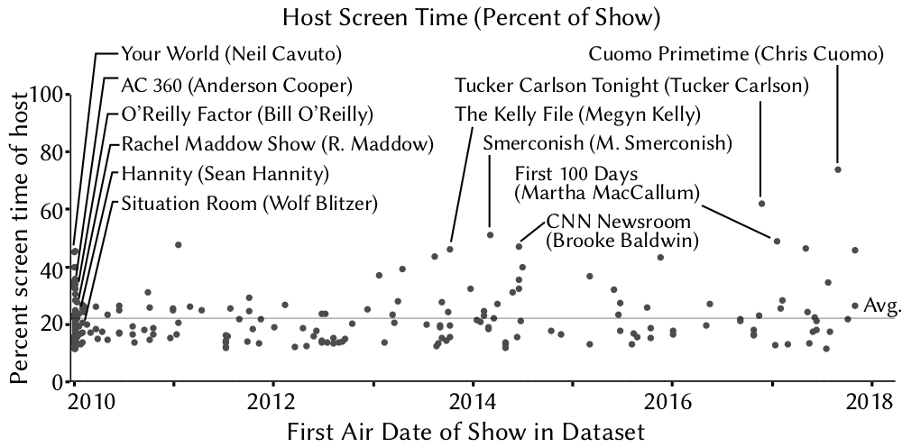

|
Scanner provides native compressed video support, which enables directly accessing compressed videos to keep your storage and bandwidth costs low.
Scanner supports machines with CPUs and GPUs out of the box so that you can make the most out of your hardware.
Scanner is integrated with Kubernetes, Google Cloud Platform, and AWS to make it easy to spin up machines to get your results back faster.
Scanner makes it much easier to analyze large video datasets to extract trends and statistics that rely on the content of the videos, instead of just the metadata. For example, we have been able to use Scanner to analyze every cable TV news show aired for a decade to understand representation in the media.
